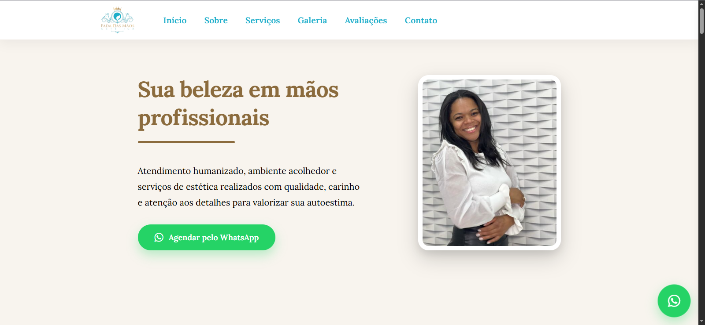
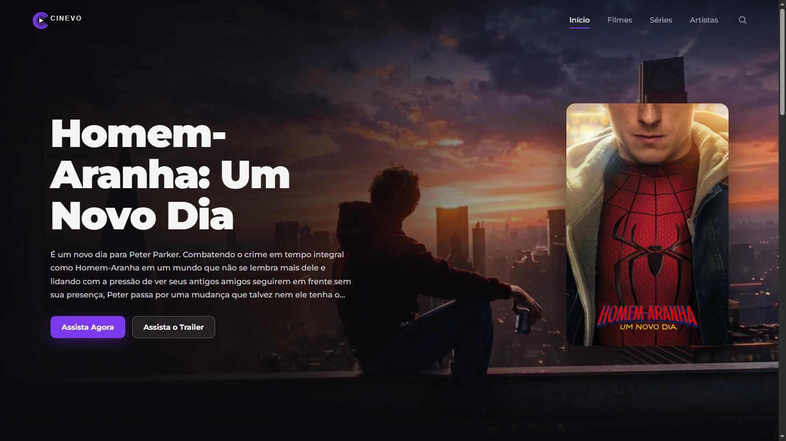

HTML5
Estrutura semântica e acessível para interfaces web.
Transformo ideias em interfaces modernas, responsivas e acessíveis, com foco em experiência do usuário e qualidade de código.
Desenvolvedora Front-End apaixonada por transformar ideias em experiências digitais.
Sou desenvolvedora Front-End, com foco na criação de interfaces modernas, responsivas e acessíveis.
Tenho experiência com tecnologias como HTML, CSS e JavaScript, além de trabalhar com React.js e outras ferramentas do ecossistema Front-End.
Gosto de transformar ideias em interfaces funcionais, cuidando tanto da experiência de quem utiliza a aplicação quanto da organização e qualidade do código.
Tecnologias e ferramentas que utilizo na criação de interfaces e aplicações web.
Estrutura semântica e acessível para interfaces web.
Estilização, responsividade e criação de interfaces modernas.
Interatividade, lógica e integração de funcionalidades.
Desenvolvimento de interfaces com componentes reutilizáveis.
Estilização de componentes React utilizando CSS-in-JS.
Utilização de Hooks para lógica e gerenciamento de estado.
Controle de versão e organização do desenvolvimento.
Versionamento, colaboração e publicação de projetos.
Conhecimentos introdutórios em desenvolvimento back-end.
Alguns dos projetos que desenvolvi para colocar em prática meus conhecimentos em desenvolvimento Front-End.

Site desenvolvido para apresentar os serviços, diferenciais e informações do espaço Fada das Mãos.

Plataforma de filmes e séries desenvolvida com React.js, utilizando a API do TMDB para exibir conteúdos, detalhes, artistas e recomendações.
Uma jornada de aprendizado, prática e evolução constante no desenvolvimento de interfaces e aplicações web.
Comecei construindo minha base em lógica de programação e algoritmos, desenvolvendo o raciocínio necessário para resolver problemas através do código.
Aprofundei meus conhecimentos em HTML e CSS, aprendendo a desenvolver interfaces estruturadas, responsivas e acessíveis.
Passei a utilizar JavaScript para desenvolver funcionalidades interativas, trabalhar com lógica de programação e consumir APIs em aplicações web.
Avancei para o desenvolvimento de interfaces com React.js, utilizando componentes reutilizáveis, React Hooks e Styled Components para organizar e estilizar aplicações.
Venho aplicando meus conhecimentos em projetos próprios, colocando em prática conceitos de desenvolvimento Front-End, responsividade, acessibilidade e organização de código.
Tem um projeto em mente ou quer trocar uma ideia? Entre em contato comigo.
Estou aberta a novas oportunidades e projetos. Se você quiser conversar sobre desenvolvimento Front-End, trabalho ou algum projeto, pode me chamar.